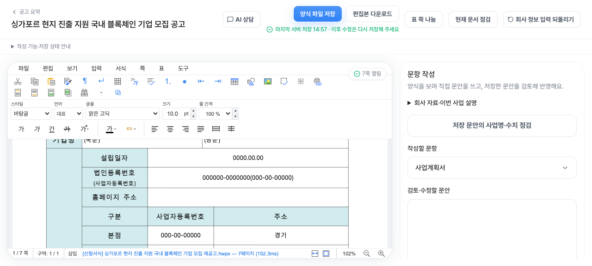
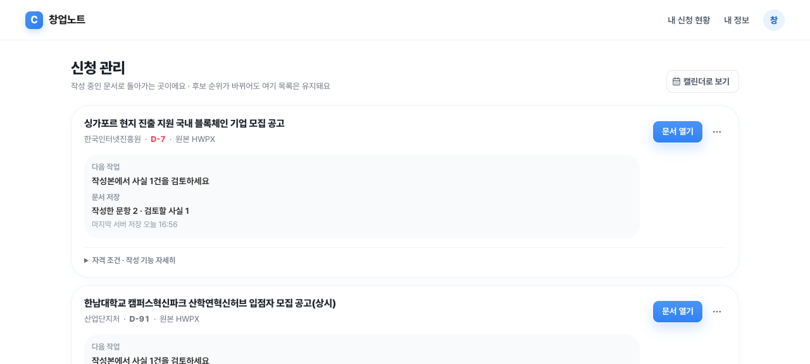
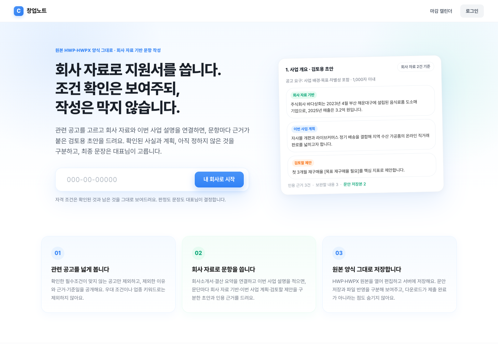
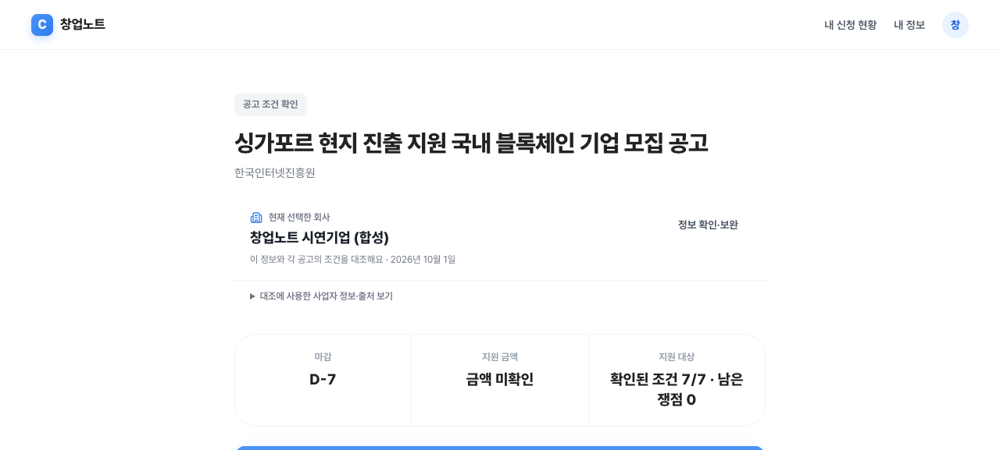
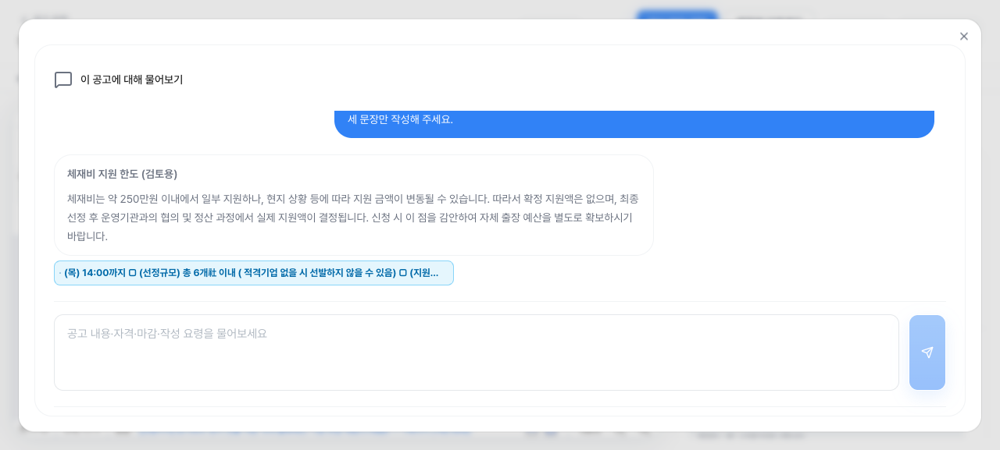
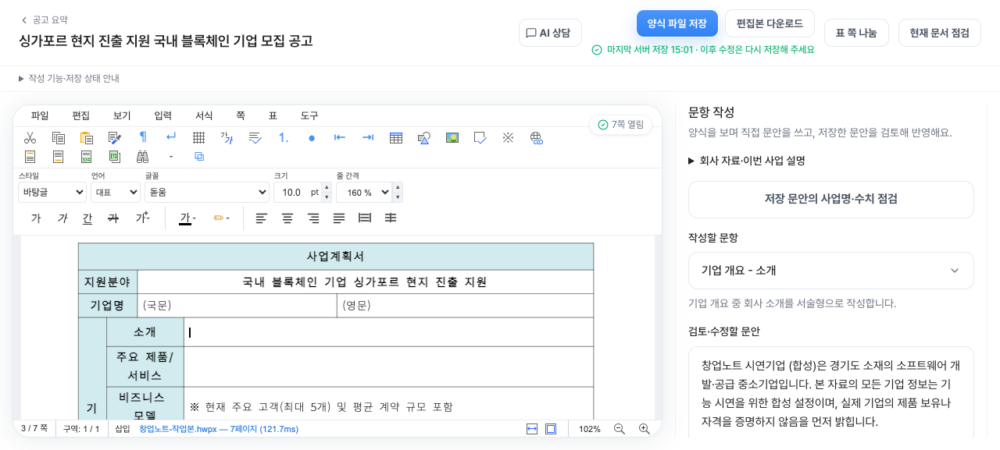
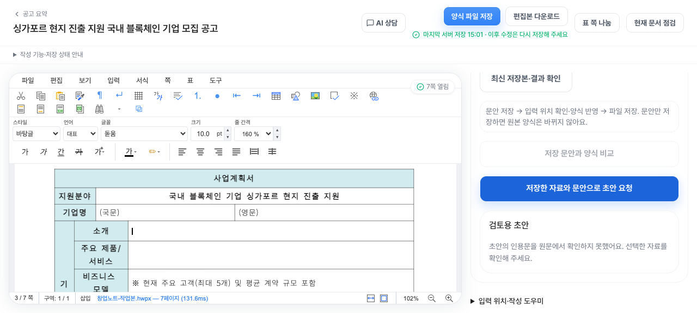

184일
4월 1일부터 10월 1일까지
1,445건
개발 중 코드를 저장한 횟수
1,206 + 239
본 서비스에 합쳐진 것
+ 따로 작업 중인 것
4/1 – 6/18 · 79일개발 기록이 남지 않은 기간
6/19 – 10/1 · 105일6/19 첫 기획 문서 · 6/25 첫 코드 저장
2026.04.01 – 10.01 · 본사 팀 공유
사업자번호로 지원사업을 찾던 서비스가, 신청서를 함께 쓰는 도구가 되기까지
회고 범위
지난 6개월 가운데 개발 기록으로 확인할 수 있는 부분을 정리했습니다.
4월 1일부터 10월 1일까지
개발 중 코드를 저장한 횟수
본 서비스에 합쳐진 것
+ 따로 작업 중인 것
출발점
6월 19일 사용자 흐름 기획 문서에서
복잡한 지원사업 찾기를
한 번에 한 단계씩, 쉽게
기본 정보는 자동으로 불러오고, 빈 조건만 하나씩 묻는다.
지금 가능한 사업과 준비하면 열릴 사업을 함께 보여준다.
확인 못 한 조건과 지원할 수 없는 이유를 숨기지 않는다.
고민의 변화
처음 목표를 버린 것이 아니라, 사용자가 실제로 끝낼 수 있는 일에 가까워졌습니다.
회사 정보와 공고를 연결
양식을 화면에 띄우고 검토
근거를 남기고 따로 검토
답하면 결과가 바로 바뀌게
회사 자료로 문항별 초안
고민의 변화
7월에는 검색에서 한 걸음 더 나아가 신청 준비와 양식 작성까지 범위를 넓혔습니다.
한글·PDF 양식을 화면에 띄우고, 입력할 칸의 위치를 찾아 검토하는 화면을 만들었다.
한글 파일에 바로 입력해 내려받고, 화면에서 직접 고친 뒤 수정본을 저장할 수 있게 했다.

고민의 변화
AI가 읽은 내용마다 출처를 달고, 검토를 통과한 것만 쓰도록 했습니다.
공고 본문과 첨부파일을 그대로 보관
회사 정보와 하나씩 비교하도록 정리
잘못 읽은 곳과 확인이 필요한 곳을 표시
통과한 결과만 추천과 작성에 사용
고민의 변화
빠르고 싸게 돌리는 문제와 정확하게 읽는 문제는 별개였습니다.
AI 분석은 정액 구독 요금제로 돌려 비용을 줄이고, 중간에 멈춰도 이어서, 실패한 건만 다시 돌리게 했다.
빠진 첨부, 얽힌 조건, 서약 항목 오해, 양식 칸 위치는 계속 손봐야 했다.
‘끝까지 돌았다’와 ‘쓸 만한 결과가 나왔다’는 다른 이야기였습니다.
서비스로 연결
8월 17일, 비공개 베타 대상 소규모 반영 결과
서비스 반영 완료
반영 후 추천 결과 점검 통과
서비스로 연결
9월 초에는 입력한 내용이 사라지거나 엇갈리지 않도록 다듬었습니다.
회사 정보와 공고별 답변을 저장해 두고 그대로 불러온다.
공고·질문·답변이 바뀌면 예전 판정을 그대로 쓰지 않는다.
소유자·편집자·보기 전용 권한을 나누고, 회사끼리 섞이지 않게 한다.

서비스로 연결
공고 분석이 덜 끝났다고 사용자가 아무것도 못 하는 일이 없도록 했습니다.
확인된 것과 아직 확인할 것을 보여주고, 필요한 답만 묻는다.
양식을 바로 열어 고칠 수 있게 하고, 확실한 칸의 입력과 문장 작성을 돕는다.
‘추천 후보’, ‘지원 가능 확정’, ‘서류 완성’은 서로 다른 단계입니다.
서비스로 연결
9월 30일–10월 1일, 신청서 작성 기능 개발과 일부 화면 배포
회사 소개 글이나 PDF 자료를 이번 신청서의 사업 설명에 활용한다.
초안마다 근거를 붙이고, 보관·복사·파일에 넣기를 따로 할 수 있다.
표가 넘치지 않게 막고, 쪽 나누기와 되돌리기, 숫자 점검을 더했다.

직접 보기
10월 1일 오후, 시연용으로 만든 가상의 회사로 처음부터 끝까지 이어서 확인했습니다.





이날 확인한 것
직접 보기 · 1 / 5
회사 정보와 공고 원문의 조건을 하나씩 맞춰 보고, 확인된 것과 남은 쟁점을 나눠 보여 줍니다.
조건을 확인했다고 선정이나 자격이 보장되지는 않습니다.
직접 보기 · 2 / 5
기관이 배포한 한글 신청서를 화면에서 그대로 열고, 주소·성명·연락처 같은 회사 정보를 한 번에 채웠습니다.
위치를 확신할 수 없는 칸은 자동으로 채우지 않고 비워 둡니다.
직접 보기 · 3 / 5
체재비 지원 한도처럼 헷갈리기 쉬운 내용을 물으면, 공고 원문의 근거 구절을 함께 보여 줍니다.
첫 답의 지원액 표현이 정확하지 않아, 다시 물어 바로잡았습니다.
직접 보기 · 4 / 5
회사 자료와 사업 설명으로 문항별 초안을 만들고, 사람이 읽고 고쳐서 저장합니다.

근거를 원문에서 찾지 못하면 초안을 내지 않고 이렇게 알립니다.
직접 보기 · 5 / 5
검토한 문안을 양식의 해당 칸에 넣고 저장했습니다. 신청 관리에서 다시 열어도 내용이 그대로였습니다.
이미 내용이 있는 칸은 확인 표시를 해야만 바꿉니다.
만든 것과 남은 것
코드와 검증 기록으로 확인할 수 있는 것들
공고를 모으고 조건을 정리해, 근거와 검토를 거쳐 서비스에 반영하는 흐름
회사 정보·질문·답변을 저장하고, 권한·충돌·답변 취소까지 처리
원본 양식 편집, 문장 제안, 사용자 확인 후 반영, 저장과 재사용
정해진 범위만 돌리고, 과정을 기록하고, 문제 생긴 건만 다시 처리
만든 것과 남은 것
서비스가 약속하는 것과 실제로 확인한 것 사이의 간격을 좁혀야 합니다.
공공 데이터의 빈틈과 공고별 조건 충돌이 남았다.
파일 변환, 검토, 서술형 문항, 표 배치가 걸림돌이었다.
실제 사용자가 끝까지 써 본 사례가 아직 부족하다.
신청 결과 데이터와 장기 사용 기록이 아직 부족하다.
다음 방향
지금 만들고 있는 신청서 작성 기능을 바탕으로 한 제안
공고 하나를 정했다면,
검토할 수 있는 서류가 나올 때까지
맞는 공고를 추리고, 안 맞는 이유를 알려준다.
회사 자료를 활용하고, 확인된 문장만 서류에 넣는다.
다음 방향
지금 세워 둔 사용자 검증 계획을 작게 실행해 보자는 제안입니다.
실제로 쓰는 데 걸린 시간과 고친 분량을 관찰
초안 쓰기부터 파일 반영, 저장, 이어 쓰기까지 확인
내려받은 파일을 한글 프로그램에서 열어 내용과 모양 확인
살펴볼 것
다음 방향
다음에 무엇을 넓힐지는 고객이 실제로 끝낸 일을 보고 정하자는 제안입니다.
비슷한 신청서를 자주 쓰는 사업자부터 정한다.
첫 서류를 끝까지 썼는지, 다음 공고에서 다시 쓰는지 본다.
오류와 고칠 부분이 실제로 줄어든 양식부터 넓힌다.
부록 · 주간 돌아보기
‘찾아준다’는 약속을 규칙과 출처로 뒷받침했다. 다만 빠르게 늘린 화면을 사용자 한 명이 끝까지 써 보는 확인은 숙제로 남았다.
검색 다음에 오는 서류 작업으로 다가갔다. 양식이 제각각이라 ‘얼마나 정확히 읽고 쓸 수 있나’가 핵심 과제가 됐다.
기능을 크게 넓혔다. 그만큼 추천을 믿을 수 있는지, 실제로 쓸 만한 공고가 충분한지는 따로 확인해야 했다.
부록 · 주간 돌아보기
실제로 측정해 보니 받을 수 있는 추천이 거의 없어 기능 확장을 멈췄다. 그래서 공고 원문을 제대로 읽고 따로 검토하는 데 힘을 쏟기 시작했다.
AI가 읽은 결과가 서비스에 쓰이기까지 누가 무엇을 확인할지 정했다. 몇 건 통과했다고 전체가 괜찮다고 보지 않는 기준도 필요했다.
확인된 조건만으로도 안전하게 쓰는 방향을 다듬었다. 비용을 줄일 길은 찾았지만, 정확하게 읽는 문제는 별개였다.
부록 · 주간 돌아보기
실험은 구독 요금제로 돌리고 실제 서비스와 섞이지 않게 했다. 추천과 신청서 분석을 한데 묶은 구조 때문에 공고가 서비스에 올라가지 못하는 문제도 드러났다.
규모를 키운 실험이 실패하자 이를 인정하고 구조를 고쳤다. 속도, 끝까지 도는지, 품질, 서비스 반영은 하나의 성공률로 말할 수 없었다.
검토한 공고 9건을 비공개 베타 서비스에 반영하고, 양식을 화면에서 바로 고칠 수 있게 했다. 다만 폭넓은 고객 검증이나 제출 성과를 뜻하지는 않는다.
부록 · 주간 돌아보기
사전 분석이 덜 끝나도 편집은 할 수 있게 바꿨다. 다만 늘어난 안전장치가 서비스 반영을 더 빠르게 했는지는 따로 따져야 했다.
분석 규모를 키우면서 사용자가 실제로 겪는 흐름을 돌아봤다. 공고 개수보다 조건 확인과 서류 결과가 더 중요한 기준이 됐다.
답변 저장·권한·수정이 실제로 맞물려 돌게 했다. 다만 시험용 계정으로 확인한 것과 실제 사용자가 끝낸 것은 구분해야 했다.
부록 · 주간 돌아보기
‘추천 후보’와 ‘지원 가능 확정’을 나눴다. 남은 확인을 누가 어떻게 마무리하는지까지 서비스가 안내해야 했다.
질문 하나에 답하면 결과가 바뀌고, 한 번 답한 회사 정보는 다른 공고에도 쓰이게 했다. 원문 누락과 검토 실패는 여전히 걸림돌이었다.
신청서 작성 중심의 방향이 실제 코드와 화면 배포로 이어졌고, 같은 날 오후 시연에서 처음부터 끝까지 이어 봤다. 실제 고객 자료로 쓰는 검증은 남았다.
부록 · 읽는 법
확인된 사실과 회고하며 덧붙인 해석을 나눠 썼습니다.
코드 저장 기록, 문서에 적힌 날짜, 당시의 검증·배포 기록과 시연 화면
날짜별 의미, 주간 평가, 앞으로의 방향 제안
4월 1일–6월 18일의 활동, 지금 서비스 전체 상태, 고객 성과